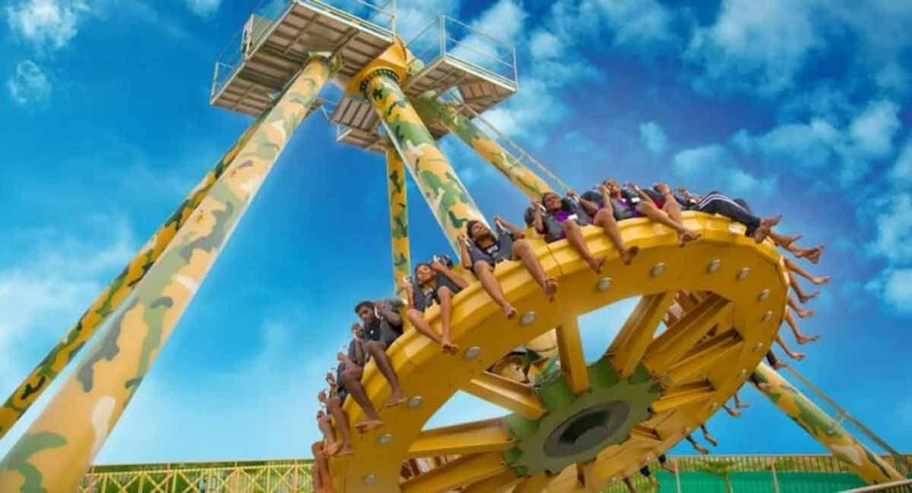
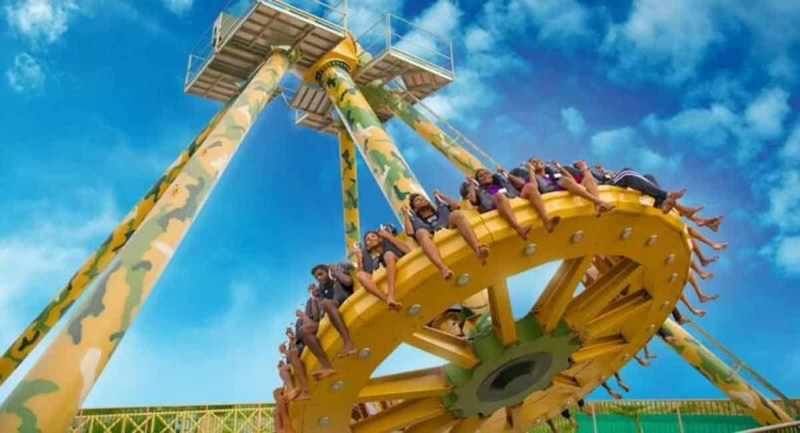

Roller coaster

T Rex

Equinox
Free Fall

Korneto

Slide

Roller coaster
T Rex
Equinox
Free Fall
Korneto
Slide
About wonderla
Wonderla is the largest chain of amusement parks in India. It is owned and operated by Wonderla Holidays Limited which is headquartered near Bidadi, 28 kilometres (17 mi) from Bangalore, Karnataka. It operates 3 amusement parks in Kochi, Bangalore, and Hyderabad.
Wonderla is promoted by Kochouseph Chittilappilly and his son Arun Chittilappilly. The first amusement park project Wonderla Kochi was set up in 2000, followed by the second in Bangalore in 2005, and finally the third in Hyderabad was commissioned in April 2016. Wonderla is currently planning to open its 4th amusement park in Chennai. Wonderla amusement parks offer a variety of dry rides such as roller coasters, ferris wheels, drop towers and water rides for its customers.

Kochi
Wonderla Kochi
The Kochi park was re-branded in 2011. This park is situated on the top of a hill at Pallikkara, 12 kilometres (7.5 mi) from the city center. The park was set up in 2000 and was designed by architect Joseph John.
Wonderla Kochi is the first park in India to get ISO 14001 certificate for eco-friendliness and OHSAS 18001 certificate for safety. The park is spread over 30 acres of landscaped space with more than 60 amusement rides. In July 2018, Wonderla Kochi was ranked eleventh in the TripAdvisor 'Travellers' choice awards for amusement parks and water parks in Asia.
Hyderabad
Wonderla Hyderabad offers 28 land-based rides and 18 water-based attractions on 50 acres of land. Wonderla Amusement Park is situated in Raviryal, which is 28 kms from Hyderabad City. Its most notable ride is Recoil, a reverse looping roller coaster. It was launched on January 20, 2018 by Managing Director Arun K Chittilappilly and Chief Executive Officer DS Sachdeva
Bangalore
The park features a wide variety of attractions including 55 land and water rides, a musical fountain, laser shows, and a virtual reality show. Wonderla Bangalore has a full-fledged dance floor with a twist, electronically controlled rain showers. Wonderla also has attractions specially designed for children, and these are gentle yet unusual like a kiddies free fall ride. It uses solar-heated water for all its pools during winter